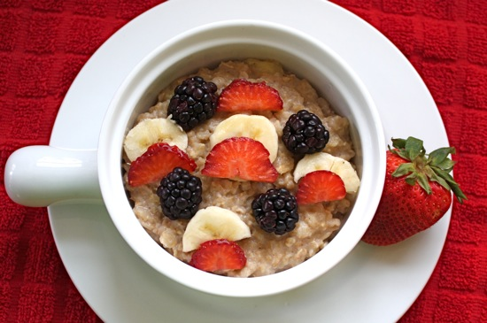

Ingredients:
1/2 cup rolled oats
1/2 teaspoon cinnamon
1/2 cup water
1/2 banana, sliced
2 Tablespoons unsweetened almond milk
Strawberries, sliced
Blackberries
Directions:
- In a microwave safe bowl, mix together the oats and cinnamon. Stir in the water.
- Cook the oats in the microwave for one minute. Remove bowl and add in the banana slices. Stir. Cook for one more minute.
- Stir in vanilla soy milk and top with fresh strawberries, bananas, and blackberries.
- Serve hot.